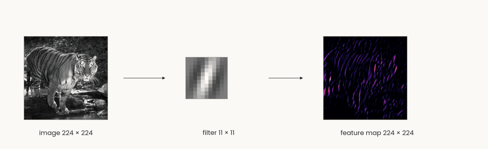
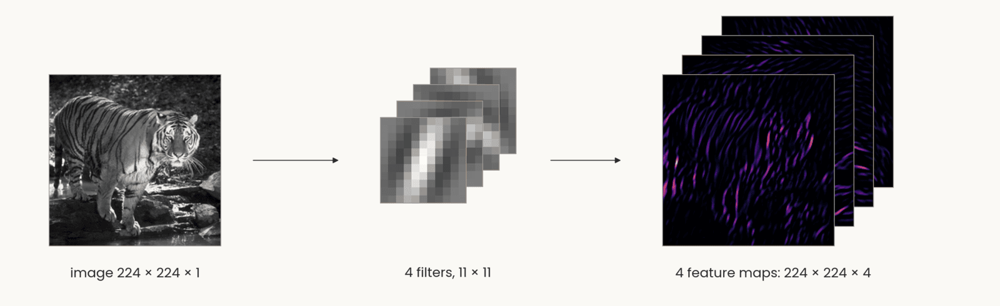
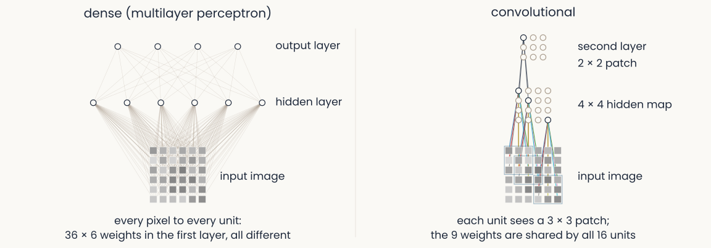
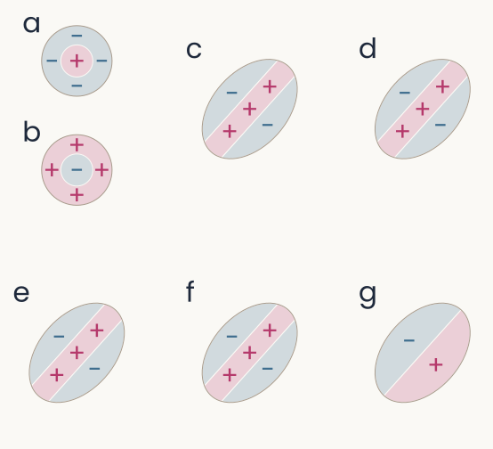

The visual system & CNNs
Reader-friendly version of the 51 lecture slides: the lecture content in normal flow, with figure descriptions and data tables where the figure carries data. Open the presentation.
Slide 1

The visual system & CNNs
Slide 2
This week
- Exam 1: Thursday, in class. It covers the first eight lectures and the four steps of backpropagation
- Recitation tonight, 6:30 PM: exam preparation
- The third assignment is released Thursday
Slide 3
How do we make a network generalize better?
Regularization: any change to training that gives up some fit to the training data to do better on new data
Slide 8
Regularization 1: a penalty on the weights
Computed: the curve fit's 10 points, after Bishop (2006), Fig. 1.7
![The same four panels with panel 4 highlighted and its fitted polynomial written out, y equals w 0 plus w 1 x up to w 9 x to the ninth, with the coefficients; the other panels dimmed. Four panels of the degree-9 polynomial fitted to the same 10 points, with an increasing penalty. No penalty: through every point, swinging far off, error on new points 0.86. Lambda 10 to the minus 7: a smooth curve close to the dashed one, 0.34. Lambda 10 to the minus 3: smooth, 0.34. Lambda 1: an almost flat line, training error 0.49, error on new points 0.61. Under each panel the size of the coefficient vector: 1.1 million, 189, 17, 0.65. Open green circles: 25 of the new points the error on new points is measured on](../images/L09/06_weight_decay_coef3.svg)
The same four panels with panel 4 highlighted and its fitted polynomial written out, y equals w 0 plus w 1 x up to w 9 x to the ninth, with the coefficients; the other panels dimmed. Four panels of the degree-9 polynomial fitted to the same 10 points, with an increasing penalty. No penalty: through every point, swinging far off, error on new points 0.86. Lambda 10 to the minus 7: a smooth curve close to the dashed one, 0.34. Lambda 10 to the minus 3: smooth, 0.34. Lambda 1: an almost flat line, training error 0.49, error on new points 0.61. Under each panel the size of the coefficient vector: 1.1 million, 189, 17, 0.65. Open green circles: 25 of the new points the error on new points is measured on
Open full-size figure- The fitted polynomial, λ = 1: every coefficient under 0.35, ‖w‖ = 0.65, and the curve is nearly flat
Slide 9
Ridge regression: the penalty on a neuron model
![Two panels for one monkey IT recording site and 512 features of the trained network's late layer. Left: predicted against recorded responses for a ridge fit; training images faint magenta, held-out images green, both scattered along the diagonal, R-squared 0.71 on training and 0.69 on held-out images. Right: R-squared against the penalty lambda on a log axis; with almost no penalty, training R-squared is 0.85 and held-out R-squared 0.28; as the penalty grows, training R-squared falls while held-out R-squared rises to meet it near 0.69 at the penalty chosen on the training images, then both fall](../images/L07/encoding_fit_heldout.svg)
Two panels for one monkey IT recording site and 512 features of the trained network's late layer. Left: predicted against recorded responses for a ridge fit; training images faint magenta, held-out images green, both scattered along the diagonal, R-squared 0.71 on training and 0.69 on held-out images. Right: R-squared against the penalty lambda on a log axis; with almost no penalty, training R-squared is 0.85 and held-out R-squared 0.28; as the penalty grows, training R-squared falls while held-out R-squared rises to meet it near 0.69 at the penalty chosen on the training images, then both fall
Open full-size figureComputed: one monkey IT site (Bao et al. 2020), 1,224 object images, 512 late-layer units of ResNet-18; a random fifth held out
- Encoding model: one IT site from 512 units by ridge regression, λ by cross-validation inside the training images (
RidgeCV); too small a λ overfits (held-out 0.28 vs 0.69) - You fit this in the second assignment: one IT site, one layer. The next assignment predicts V1, V4 and IT responses from each of ResNet-50's 16 blocks
Slide 10
Regularization 2: dropout

Three copies of the same small network: in the first two, a different random half of the hidden units is switched off for one training step each, with their connections removed; in the third, at test time, all units are on
Open full-size figure- Dropout: at each training step, switch off a random half of the hidden units; all are on at test time
- Often with the weight penalty, sometimes L1 (absolute values): each cuts the freedom to fit noise
Slide 15
Regularization 3: more examples
Computed: the same curve and noise, after Bishop (2006), Fig. 1.6
![The same four panels with panel 4 highlighted and its fitted polynomial written out with the coefficients; the other panels dimmed. Four panels of the same degree-9 polynomial fitted to more and more noisy points from the dashed sine-shaped curve. N equals 10: the curve swings far off, error on new points 0.86. N equals 15: close to the dashed curve, 0.34. N equals 30: 0.35. N equals 100: the fitted curve follows the dashed one, training error 0.28, error on new points 0.31. Under each panel the size of the coefficient vector: 1.1 million, 46,000, 37,000, 8,700. Open green circles: 25 of the new points the error on new points is measured on](../images/L09/02_poly_samples_coef3.svg)
The same four panels with panel 4 highlighted and its fitted polynomial written out with the coefficients; the other panels dimmed. Four panels of the same degree-9 polynomial fitted to more and more noisy points from the dashed sine-shaped curve. N equals 10: the curve swings far off, error on new points 0.86. N equals 15: close to the dashed curve, 0.34. N equals 30: 0.35. N equals 100: the fitted curve follows the dashed one, training error 0.28, error on new points 0.31. Under each panel the size of the coefficient vector: 1.1 million, 46,000, 37,000, 8,700. Open green circles: 25 of the new points the error on new points is measured on
Open full-size figure- The fitted polynomial, N = 100: ‖w‖ = 8,700; with more points the curve stops swinging between them
Slide 16
No more data? Make altered copies of it

Eight versions of one photograph of a pink orchid, each made by a torchvision transform: original, horizontal flip, resized crop, colour jitter, rotation, affine warp, perspective, random erasing with a grey patch
Open full-size figure- Data augmentation: train on altered copies that keep the label: flips, crops, colour, rotation, warps, erased patches. Choose transformations that should not change the label
Slide 17
Augmentation in PyTorch: a transform pipeline
transforms.Compose([
transforms.RandomResizedCrop(224, scale=(0.5, 1.0)), # Crop and resize
transforms.RandomHorizontalFlip(), # Flip horizontally at random
transforms.RandomRotation(15), # Rotate by up to 15 degrees
transforms.ColorJitter(0.3, 0.3, 0.3, 0.05), # Vary colour and brightness
transforms.ToTensor(), # Convert to channel-first floats in [0, 1]
transforms.Normalize(IMAGENET_MEAN, IMAGENET_STD), # Standardize channels
])
- Each epoch draws a fresh random version of every image, so the network rarely sees the same picture twice. Flips that would change the label stay out: a 6 is not a 9
Slide 18
From the multilayer perceptron to the convolutional network
A dense layer on an image needs a weight for every pixel, and an object can appear anywhere: a small filter, applied at every position
Slide 19
Dense versus convolutional: where the weights go
![Two panels over the same 6 by 6 image of pixels. Left, dense: every pixel is wired to every one of six hidden units, a tangle of 216 thin lines, and every hidden unit to every output unit; caption: every pixel to every unit, 36 times 6 weights in the first layer, all different. Right, convolutional: a 4 by 4 map of hidden units, three of which are shown wired each to its own 3 by 3 patch of pixels with the same nine colour-coded weights, and one second-layer unit wired to a 2 by 2 patch of the map; caption: each unit sees a 3 by 3 patch, the nine weights are shared by all sixteen units](../images/L11/mlp_vs_cnn.svg)
Two panels over the same 6 by 6 image of pixels. Left, dense: every pixel is wired to every one of six hidden units, a tangle of 216 thin lines, and every hidden unit to every output unit; caption: every pixel to every unit, 36 times 6 weights in the first layer, all different. Right, convolutional: a 4 by 4 map of hidden units, three of which are shown wired each to its own 3 by 3 patch of pixels with the same nine colour-coded weights, and one second-layer unit wired to a 2 by 2 patch of the map; caption: each unit sees a 3 by 3 patch, the nine weights are shared by all sixteen units
Open full-size figure- The perceptron wires every pixel to every unit. The convolutional layer wires each unit to a patch, and every unit shares the same weights: a feature detector copied across the image
Slide 20
Count the weights: a dense layer on an image

Horizontal bars on a log axis: 96 filters of 11 by 11 by 3, reused at every position, 34,848 weights; 96 dense units, each wired to every pixel of a 224 by 224 colour image, 14,450,688 weights
Open full-size figure- Flatten a 224 × 224 colour image: one dense unit needs 224 · 224 · 3 = 150,528 weights, and it ignores which pixels are neighbours
- AlexNet's first layer instead learns 96 small filters of 11 × 11 × 3 and reuses each one at every position: 34,848 weights, about 400 times fewer than 96 dense units
- An object can sit anywhere in the image, so the detector is needed at every position: local filters, the same everywhere
Slide 21
Try it: template matching at every position
- The image is a grid of numbers; cut a 5 × 5 template, slide it: a dot product at each position. The best match is where it came from
Slide 22
Try it: slide the filter yourself
- One 7 × 7 filter, the tiger in 96 × 96 grey levels: step the window, read the dot product, watch the map fill in; then switch the filter
Slide 23
Convolution: one filter, slid over the image
- A filter (or kernel), a small grid of weights, a template, slid over the image; at each position the dot product, then ReLU: a feature map. Shift the image and the map shifts with it

The tiger photograph in grey levels, 224 by 224, an arrow to one 11 by 11 vertical Gabor filter, an arrow to the feature map, 224 by 224, bright where the image has vertical stripes
Open full-size figure
Slide 24
One filter gives one map; a layer gives a stack of maps
- Four filters, four feature maps: the layer's output is a stack, one channel per filter, 224 × 224 × 4. Channels are the depth of the next layer's input

The same tiger at the same size, an arrow to four 11 by 11 Gabor filters at four orientations stacked as cards, an arrow to the four feature maps stacked as cards, all in the same colour map as the single map before
Open full-size figure
Computed: the tiger, four 11 × 11 Gabor filters, stride 1, padding 5, ReLU
Slide 25
The convolutional layer, in notation

Two panels over the same 6 by 6 image. Left, dense: every pixel wired to every hidden unit, a tangle of lines, the multilayer perceptron layer W a plus b. Right, convolutional: three hidden units of a 4 by 4 map each wired to its own 3 by 3 patch with the same nine colour-coded weights, the convolution K star A plus b
Open full-size figure- Left, the MLP layer: every input to every unit. Right, the convolution: each unit sees a patch of all input maps, the same weights at every position
- : the filters, of them, each ; : the feature maps, one channel per filter
Slide 26
Which brain areas turn an image into an object?
Simple and complex cells: the weighted sum and the pooling of the last slides, found in cortex decades earlier
Slide 27
Core object recognition: animal or not?
Slide 28
Monkeys do it too
- Monkeys trained on the task answer as fast as people. From a few electrodes over V4 and posterior IT, a linear readout recovers the category, and it errs on the same images as the monkeys
Slide 29
The ventral stream: a hierarchy of areas
- Tuning gets more complex (edges, parts, objects) and more tolerant of position and size
- In IT, a linear readout of ~100 neurons reports the category: a linear classifier separates the categories

The ventral-stream hierarchy from retina and LGN through V1, V2, V4 to IT, with latencies growing from about 40 to 100 ms and neuron counts per stage
Open full-size figureSlide 30
Retina and LGN: Kuffler's centre–surround cells

Stephen Kuffler
Open full-size figure- A cell's receptive field: the patch of the visual field where light changes its firing. For a retinal ganglion or LGN cell, light on the + centre excites, on the − surround inhibits (left: on-centre, and its mirror image, off-centre); uniform light does nothing. Right, Kuffler's records: these cells report local contrast, not brightness
Two schematic receptive fields: an on-centre cell, a disc of plus signs inside a ring of minus signs, and an off-centre cell, the reverse; no labels
Open full-size figure

Kuffler 1953 as redrawn in Hubel's Eye, Brain and Vision: for an on-centre retinal ganglion cell, four stimuli and their spike records: a small spot in the centre gives a burst while the light is on; a larger spot covering centre and surround gives little; a ring on the surround silences the cell and gives a burst when the light goes off; diffuse light over the whole field gives almost nothing
Open full-size figureSlide 31
V1: Hubel & Wiesel's recording, on film

David Hubel and Torsten Wiesel at their recording setup
Open full-size figure- One neuron in cat V1, one electrode, a bar of light moved by hand: the clicks are its spikes, and they come only for the right orientation at the right place
Slide 32
V1: Hubel & Wiesel's oriented cells
David Hubel and Torsten Wiesel at their recording setup
Open full-size figure- Hubel & Wiesel mapped V1 cells by hand (left; triangles excite, crosses inhibit). Right, the same maps a–g as + and − regions: centre–surround (a, b), bar detectors (c, d, e, f) and an edge detector (g), each at one orientation

Hubel and Wiesel 1962, receptive fields of cat cortical cells mapped by hand with spots and bars of light: triangles mark positions where light excites the cell, crosses where it inhibits; panels a and b are circular centre-surround maps, c to g are elongated maps with an ON stripe flanked by OFF regions at one orientation
Open full-size figure
The same seven receptive fields a to g redrawn with plus and minus regions: a, an on-centre disc; b, an off-centre disc; c, d, e and f, a plus stripe between minus flanks along the diagonal; g, an edge, plus on one side and minus on the other
Open full-size figure
Slide 33
V1 in one picture: ganglion → simple → complex
- Left to right, ganglion or LGN cells, simple cells, complex cells: centre–surround → oriented at one position → oriented anywhere nearby: a weighted sum, then a pooling, the two operations every stage of today's models repeats

Three columns of icons: an on-centre and an off-centre circle; an oriented bar on a dark or light background at one position; an oriented bar with arrows showing it can move across the field
Open full-size figureSlide 40
Mechanism: a row of LGN cells makes a simple cell
- Shifted further: the bar must line up with the + centres

Hubel and Wiesel's wiring model, computed on model cells, bar at the right orientation but shifted 0.8 units sideways onto the inhibitory surrounds: four on-centre LGN receptive fields in a row on a screen, each with a plus centre and a minus surround, a yellow bar of light across them, four LGN cell bodies with spike trains below, all converging on one cortical simple cell with its own spike train
Open full-size figureSlide 47
Mechanism: simple cells converge on a complex cell
- Past the fields: each simple cell covers a narrow range, the complex cell a broad one

Computed on model cells. Left: five identical simple cells in a row, their oriented receptive fields overlapping, a yellow bar of light at one position, spike trains next to each cell, all three converging symmetrically on one complex cell below, which sums them. Right: response against the bar's position, five overlapping bumps for the simple cells and the complex cell's broad curve, their sum, drawn up to the current position
Open full-size figureSlide 48
Recap
- Generalize better: a penalty on the weights (weight decay, ridge), dropout, more or altered data, with λ chosen on validation data
- Brain: center–surround, simple cells wired from rows of LGN cells, complex cells that pool them; receptive fields mapped by hand or by reverse correlation
- Network: convolution (one filter, shared), stride and pooling, global average pooling to a feature vector
Slide 49
Further reading for the research trail
Optional: a few research-trail entries over the semester. Any paper mentioned in any lecture qualifies.
- Fukushima Biol Cybern 1980: the Neocognitron, the first S/C hierarchy, trained without labels
- Serre & Poggio Commun ACM 2010: HMAX and the table of data it accounts for, from V1 to behaviour
- Linsley, Feng & Serre Trends Cogn Sci 2026: why better AI stopped meaning better models of biology
- Cammarata et al. Distill 2020: curve detectors, one family of units in InceptionV1 followed from feature visualization to circuit
- Yamins et al. PNAS 2014: networks that recognize objects better also predict IT neurons better
Slide 50
Further reading, continued
- Zhuang et al. PNAS 2021: networks trained without labels predict ventral-stream neurons as well as labeled ones
- Konkle & Alvarez Nat Commun 2022: a network trained without labels matches human ventral fMRI
- Kar et al. Nat Neurosci 2019: images that IT solves late, which feedforward networks miss
- Jinsi, Henderson & Tarr PLOS ONE 2023: starting on blurred images helps a network learn categories
- Lu et al. Nat Mach Intell 2026: an infant-like visual diet gives shape-based, robust networks
Slide 51
Minute paper
Submit on Canvas → Minute papers → Minute Paper 12 (access code read out in class).
Write three brief points in your own words:
- Hubel and Wiesel's simple and complex cells each correspond to one operation of a convolutional
network. Name the two operations, and say what each buys the network. - Something you do not yet understand, or a question still open
- Another idea you found interesting, and why it matters for brains, behavior or AI
Credit for a thoughtful attempt, not for being correct.